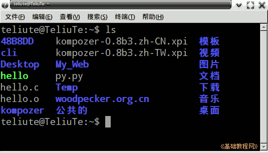
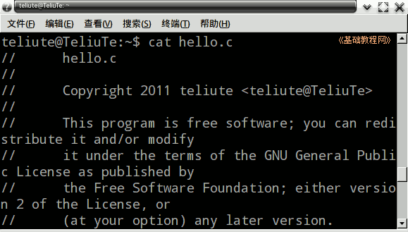
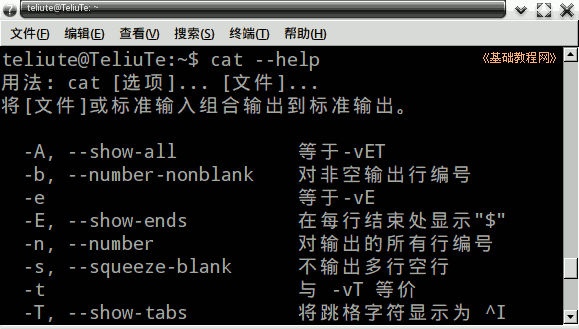
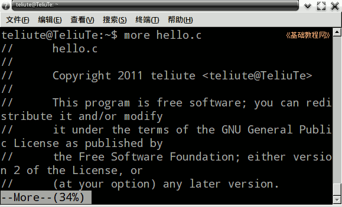

Ubuntu 命令行教程
作者：TeliuTe 来源：基础教程网
六、cat 查看文件 返回目录 下一课cat 是一个文本文件查看器，可以方便地查看文件内容；
1、cat 命令
1）打开终端窗口，显示当前为主文件夹；
2）先用 ls 命令查看一下当前文件夹中的文件，其中的 py.py 和 hello.c 是程序源文件可以查看；

3）输入命令 cat hello.c 就可以看到文件里面的内容；

4）输入 cat --help 后可以查看更多帮助信息；

5）more 命令跟它相似，只是可以分页查看，按空格到下一页，对于比较长的文件，可以用它来查看；

本节学习了cat 查看文件的基础知识，如果你成功地完成了练习，请继续学习下一课内容；
本教程由86团学校TeliuTe制作|著作权所有
基础教程网：http://teliute.org/
美丽的校园……
转载和引用本站内容，请保留作者和本站链接。